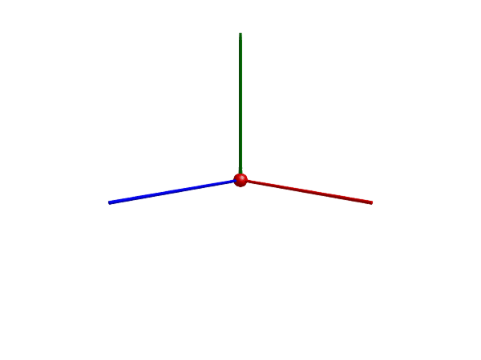
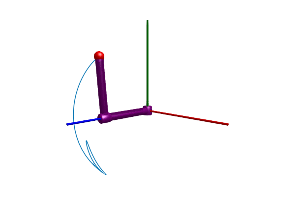

Pendulum–The "Hello World of multi-body dynamics"
This beginners tutorial will start by modeling a pendulum pivoted around the origin in the world frame. The world frame is a constant that lives inside the Multibody module, all multibody models are "grounded" in the same world, i.e., the world component must be included in all models.
To start, we load the required packages
using ModelingToolkit
using Multibody, JuliaSimCompiler
using OrdinaryDiffEq # Contains the ODE solver we will use
using PlotsWe then access the world frame and time variable from the Multibody module
t = Multibody.t
world = Multibody.worldModel world with 12 (18) equations
Unknowns (9):
(frame_b₊r_0(t))[1] [defaults to 0.0]: Position vector directed from the origin of the world frame to the connector frame origin, resolved in world frame
(frame_b₊r_0(t))[2] [defaults to 0.0]: Position vector directed from the origin of the world frame to the connector frame origin, resolved in world frame
(frame_b₊r_0(t))[3] [defaults to 0.0]: Position vector directed from the origin of the world frame to the connector frame origin, resolved in world frame
(frame_b₊f(t))[1]: Cut force resolved in connector frame
(frame_b₊f(t))[2]: Cut force resolved in connector frame
(frame_b₊f(t))[3]: Cut force resolved in connector frame
(frame_b₊tau(t))[1]: Cut torque resolved in connector frame
(frame_b₊tau(t))[2]: Cut torque resolved in connector frame
(frame_b₊tau(t))[3]: Cut torque resolved in connector frame
Parameters (10):
n[1] [defaults to 0.0]: gravity direction of world
n[2] [defaults to -1.0]: gravity direction of world
n[3] [defaults to 0.0]: gravity direction of world
g [defaults to 9.80665]: gravitational acceleration of world
mu [defaults to 3.986e14]: Gravity field constant [m³/s²] (default = field constant of earth)
point_gravity [defaults to false]
render [defaults to true]
frame_b₊render [defaults to false]
frame_b₊length [defaults to 1.0]
frame_b₊radius [defaults to 0.1]Unless otherwise specified, the world defaults to having a gravitational field pointing in the negative $y$ direction and a gravitational acceleration of $9.81$ (See Bodies in space for more options).
Modeling the pendulum
Our simple pendulum will initially consist of a Body (point mass) and a Revolute joint (the pivot joint). We construct these elements by calling their constructors
@named joint = Revolute(n = [0, 0, 1], isroot = true)
@named body = Body(; m = 1, isroot = false, r_cm = [0.5, 0, 0])The n argument to Revolute denotes the rotational axis of the joint, this vector must have norm(n) == 1. We also indicate that the revolute joint is the root of the kinematic tree, i.e., the potential state of the joint will serve as the state variables for the system.
The Body is constructed by providing its mass, m, and the vector r_cm from its mounting frame, body.frame_a, to the center of mass. Since the world by default has the gravity field pointing along the negative $y$ axis, we place the center of mass along the $x$-axis to make the pendulum swing back and forth. The body is not selected as the root of the kinematic tree, since we have a joint in this system, but if we had attached the body directly to, e.g., a spring, we could set the body to be the root and avoid having to introduce an "artificial joint", which is otherwise needed in order to have at least one component that has a potential state.
To connect the components together, we create a vector of connections using the connect function. A joint typically has two frames, frame_a and frame_b. In this example, the first frame of the joint is attached to the world frame, and the body is attached to the second frame of the joint, i.e., the joint allows the body to swing back and forth. The order of the connections is not important for ModelingToolkit, but it's good practice to follow some convention, here, we start at the world and progress outwards in the kinematic tree.
connections = [
connect(world.frame_b, joint.frame_a)
connect(joint.frame_b, body.frame_a)
]With all components and connections defined, we can create an ODESystem like so:
@named model = ODESystem(connections, t, systems=[world, joint, body])
model = complete(model)The ODESystem is the fundamental model type in ModelingToolkit used for multibody-type models.
Before we can simulate the system, we must perform model compilation using structural_simplify
ssys = structural_simplify(IRSystem(model))States (2):
joint₊phi
joint₊w
Variables (186):
1 => world₊frame_b₊r_0[1]
2 => world₊frame_b₊r_0[2]
3 => world₊frame_b₊r_0[3]
4 => world₊frame_b₊R₁ˏ₁
5 => world₊frame_b₊R₂ˏ₁
6 => world₊frame_b₊R₃ˏ₁
7 => world₊frame_b₊R₁ˏ₂
8 => world₊frame_b₊R₂ˏ₂
9 => world₊frame_b₊R₃ˏ₂
10 => world₊frame_b₊R₁ˏ₃
⋮
178 => Dt(joint₊frame_b₊R₂ˏ₂, 2, true)
179 => Dt(world₊frame_b₊R₃ˏ₃, 2, true)
180 => Dt(joint₊frame_a₊R₃ˏ₃, 2, true)
181 => Dt(joint₊frame_a₊R₁ˏ₃, 2, true)
182 => Dt(joint₊frame_a₊R₂ˏ₃, 2, true)
183 => Dt(joint₊frame_b₊R₁ˏ₃, 2, true)
184 => Dt(joint₊frame_b₊R₂ˏ₃, 2, true)
185 => Dt(joint₊frame_b₊R₃ˏ₃, 1, true)
186 => Dt(joint₊phi, 2, true)
Matched SystemStructure with 184 equations and 186 variables
# ∂ₜ … v
1 [(1)]
2 [(2)]
3 [(3)]
4 112↑ [(4), 76]
5 … [(5)]
6 [(6)]
7 [(7)]
8 126↑ [(8), 80]
9 [(9)]
⋮ ⋱
178 138↓ [(172), 173]
179 139↓ [(174), 178]
180 140↓ … [175, (178), 180]
181 141↓ [175, (176), 180]
182 31↓ [175, (177), 180]
183 102↓ [(175), 179]
[(180), 181]
… [(182), 183]
[153, 154, 155, 161, 162, 163, 184]
Legend: Solvable | (Solvable + Matched) | Unsolvable | (Unsolvable + Matched) | ∫ SelectedStateThis results in a simplified model with the minimum required variables and equations to be able to simulate the system efficiently. This step rewrites all connect statements into the appropriate equations, and removes any redundant variables and equations. To simulate the pendulum, we require two state variables, one for angle and one for angular velocity, we can see above that these state variables have indeed been chosen.
We are now ready to create an ODEProblem and simulate it. We use the Rodas4 solver from OrdinaryDiffEq.jl, and pass a dictionary for the initial conditions. We specify only initial condition for some variables, for those variables where no initial condition is specified, the default initial condition defined the model will be used.
D = Differential(t)
defs = Dict() # We may specify the initial condition here
prob = ODEProblem(ssys, defs, (0, 3.35))
sol = solve(prob, Rodas4())
plot(sol, idxs = joint.phi, title="Pendulum")
The solution sol can be plotted directly if the Plots package is loaded. The figure indicates that the pendulum swings back and forth without any damping. To add damping as well, we could add a Damper from the ModelingToolkitStandardLibrary.Mechanical.Rotational module to the revolute joint. We do this below
3D Animation
Multibody.jl supports automatic 3D rendering of mechanisms, we use this feature to illustrate the result of the simulation below:
import GLMakie # GLMakie is another alternative, suitable for interactive plots
Multibody.render(model, sol; filename = "pendulum.gif") # Use "pendulum.mp4" for a video file
By default, the world frame is indicated using the convention x: red, y: green, z: blue. The animation shows how the simple Body represents a point mass with inertial properties at a particular distance r_cm away from its mounting flange frame_a. The cylinder that is shown connecting the pivot point to the body is for visualization purposes only, it does not have any inertial properties. To model a more physically motivated pendulum rod, we could have used a BodyShape component, which has two mounting flanges instead of one. The BodyShape component is shown in several of the examples available in the example sections of the documentation.
Adding damping
To add damping to the pendulum such that the pendulum will eventually come to rest, we add a Damper to the revolute joint. The damping coefficient is given by d, and the damping force is proportional to the angular velocity of the joint. To add the damper to the revolute joint, we must create the joint with the keyword argument axisflange = true, this adds two internal flanges to the joint to which you can attach components from the ModelingToolkitStandardLibrary.Mechanical.Rotational module (1-dimensional components). We then connect one of the flanges of the damper to the axis flange of the joint, and the other damper flange to the support flange which is rigidly attached to the world.
@named damper = Rotational.Damper(d = 0.3)
@named joint = Revolute(n = [0, 0, 1], isroot = true, axisflange = true)
connections = [connect(world.frame_b, joint.frame_a)
connect(damper.flange_b, joint.axis)
connect(joint.support, damper.flange_a)
connect(body.frame_a, joint.frame_b)]
@named model = ODESystem(connections, t, systems = [world, joint, body, damper])
model = complete(model)
ssys = structural_simplify(IRSystem(model))
prob = ODEProblem(ssys, [damper.phi_rel => 1], (0, 10))
sol = solve(prob, Rodas4())
plot(sol, idxs = joint.phi, title="Damped pendulum")
This time we see that the pendulum loses energy and eventually comes to rest at the stable equilibrium point $\pi / 2$.
Multibody.render(model, sol; filename = "pendulum_damped.gif")
A linear pendulum?
When we think of a pendulum, we typically think of a rotary pendulum that is rotating around a pivot point like in the examples above. A mass suspended in a spring can be though of as a linear pendulum (often referred to as a harmonic oscillator rather than a pendulum), and we show here how we can construct a model of such a device. This time around, we make use of a Prismatic joint rather than a Revolute joint. A prismatic joint has one positional degree of freedom, compared to the single rotational degree of freedom for the revolute joint.
@named body_0 = Body(; m = 1, isroot = false, r_cm = [0, 0, 0])
@named damper = Translational.Damper(d=1)
@named spring = Translational.Spring(c=10)
@named joint = Prismatic(n = [0, 1, 0], axisflange = true)
connections = [connect(world.frame_b, joint.frame_a)
connect(damper.flange_b, spring.flange_b, joint.axis)
connect(joint.support, damper.flange_a, spring.flange_a)
connect(body_0.frame_a, joint.frame_b)]
@named model = ODESystem(connections, t, systems = [world, joint, body_0, damper, spring])
model = complete(model)
ssys = structural_simplify(IRSystem(model))
prob = ODEProblem(ssys, [], (0, 10))
sol = solve(prob, Rodas4())
Plots.plot(sol, idxs = joint.s, title="Mass-spring-damper system")
As is hopefully evident from the little code snippet above, this linear pendulum model has a lot in common with the rotary pendulum. In this example, we connected both the spring and a damper to the same axis flange in the joint. This time, the components came from the Translational submodule of ModelingToolkitStandardLibrary rather than the Rotational submodule. Also here do we pass axisflange when we create the joint to make sure that it is equipped with the flanges support and axis needed to connect the translational components.
Multibody.render(model, sol; filename = "linear_pend.gif", framerate=24)
Why do we need a joint?
In the example above, we introduced a prismatic joint to model the oscillating motion of the mass-spring system. In reality, we can suspend a mass in a spring without any joint, so why do we need one here? The answer is that we do not, in fact, need the joint, but if we connect the spring directly to the world, we need to make the body (mass) the root object of the kinematic tree instead:
@named root_body = Body(; m = 1, isroot = true, r_cm = [0, 1, 0], phi0 = [0, 1, 0])
@named multibody_spring = Multibody.Spring(c=10)
connections = [connect(world.frame_b, multibody_spring.frame_a)
connect(root_body.frame_a, multibody_spring.frame_b)]
@named model = ODESystem(connections, t, systems = [world, multibody_spring, root_body])
model = complete(model)
ssys = structural_simplify(IRSystem(model))
defs = Dict(collect(root_body.r_0) .=> [0, 1e-3, 0]) # The spring has a singularity at zero length, so we start some distance away
prob = ODEProblem(ssys, defs, (0, 10))
sol = solve(prob, Rodas4())
plot(sol, idxs = multibody_spring.r_rel_0[2], title="Mass-spring system without joint")
Here, we used a Multibody.Spring instead of connecting a Translational.Spring to a joint. The Translational.Spring, alongside other components from ModelingToolkitStandardLibrary.Mechanical, is a 1-dimensional object, whereas multibody components are 3-dimensional objects.
Internally, the Multibody.Spring contains a Translational.Spring, attached between two flanges, so we could actually add a damper to the system as well:
push!(connections, connect(multibody_spring.spring2d.flange_a, damper.flange_a))
push!(connections, connect(multibody_spring.spring2d.flange_b, damper.flange_b))
@named model = ODESystem(connections, t, systems = [world, multibody_spring, root_body, damper])
model = complete(model)
ssys = structural_simplify(IRSystem(model))
prob = ODEProblem(ssys, defs, (0, 10))
sol = solve(prob, Rodas4(), u0 = prob.u0 .+ 1e-5 .* randn.())
plot(sol, idxs = multibody_spring.r_rel_0[2], title="Mass-spring-damper without joint")
The figure above should look identical to the simulation of the mass-spring-damper further above.
Going 3D
The systems we have modeled so far have all been planar mechanisms. We now extend this to a 3-dimensional system, the Furuta pendulum.
This pendulum, sometimes referred to as a rotary pendulum, has two joints, one in the "shoulder", which is typically configured to rotate around the gravitational axis, and one in the "elbow", which is typically configured to rotate around the axis of the upper arm. The upper arm is attached to the shoulder joint, and the lower arm is attached to the elbow joint. The tip of the pendulum is attached to the lower arm.
using ModelingToolkit, Multibody, JuliaSimCompiler, OrdinaryDiffEq, Plots
import ModelingToolkitStandardLibrary.Mechanical.Rotational.Damper as RDamper
import Multibody.Rotations
W(args...; kwargs...) = Multibody.world
@mtkmodel FurutaPendulum begin
@components begin
world = W()
shoulder_joint = Revolute(n = [0, 1, 0], axisflange = true)
elbow_joint = Revolute(n = [0, 0, 1], axisflange = true, phi0=0.1)
upper_arm = BodyShape(; m = 0.1, r = [0, 0, 0.6], radius=0.04)
lower_arm = BodyShape(; m = 0.1, r = [0, 0.6, 0], radius=0.04)
tip = Body(; m = 0.3)
damper1 = RDamper(d = 0.07)
damper2 = RDamper(d = 0.07)
end
@equations begin
connect(world.frame_b, shoulder_joint.frame_a)
connect(shoulder_joint.frame_b, upper_arm.frame_a)
connect(upper_arm.frame_b, elbow_joint.frame_a)
connect(elbow_joint.frame_b, lower_arm.frame_a)
connect(lower_arm.frame_b, tip.frame_a)
connect(shoulder_joint.axis, damper1.flange_a)
connect(shoulder_joint.support, damper1.flange_b)
connect(elbow_joint.axis, damper2.flange_a)
connect(elbow_joint.support, damper2.flange_b)
end
end
@named model = FurutaPendulum()
model = complete(model)
ssys = structural_simplify(IRSystem(model))
prob = ODEProblem(ssys, [model.shoulder_joint.phi => 0.0, model.elbow_joint.phi => 0.1], (0, 10))
sol = solve(prob, Rodas4())
plot(sol, layout=4)
In the animation below, we visualize the path that the origin of the pendulum tip traces by providing the tip frame in a vector of frames passed to traces
import GLMakie
Multibody.render(model, sol, filename = "furuta.gif", traces=[model.tip.frame_a])
Orientations and directions
Let's break down how to think about directions and orientations when building 3D mechanisms. In the example above, we started with the shoulder joint, this joint rotated around the gravitational axis, n = [0, 1, 0]. When this joint is positioned in joint coordinate shoulder_joint.phi = 0, its frame_a and frame_b will coincide. When the joint rotates, frame_b will rotate around the axis n of frame_a. The frame_a of the joint is attached to the world, so the joint will rotate around the world's y-axis:
get_rot(sol, model.shoulder_joint.frame_b, 0)3×3 RotMatrix3{Float64} with indices SOneTo(3)×SOneTo(3):
1.0 0.0 0.0
0.0 1.0 0.0
0.0 0.0 1.0we see that at time $t = 0$, we have no rotation of frame_b around the $y$ axis of the world (frames are always resolved in the world frame), but a second into the simulation, we have:
R1 = get_rot(sol, model.shoulder_joint.frame_b, 1)3×3 RotMatrix3{Float64} with indices SOneTo(3)×SOneTo(3):
0.739387 0.0 -0.67328
0.0 1.0 0.0
0.67328 0.0 0.739387Here, the frame_b has rotated around the $y$ axis of the world (if you are not familiar with rotation matrices, we can ask for the rotation axis and angle)
using Multibody.Rotations
rotation_axis(R1), rotation_angle(R1)([6.734077304723566e-63, -1.0, 0.0], 0.7386364713375662)This rotation axis and angle should correspond to the joint coordinate (the orientation described by an axis and an angle is invariant to a multiplication of both by -1)
sol(1, idxs=model.shoulder_joint.phi)-0.7386364713375659The convention used in get_rot is to return the rotation matrix $R_{World}^{Local}$ that rotates a coordinate from the local frame to the world frame, $r_{World} = R_{World}^{Local} r_{Local}$.
Here, we made use of the function get_rot, we will now make use of also get_trans and get_frame.
The next body is the upper arm. This body has an extent of 0.6 in the $z$ direction, as measured in its local frame_a
get_trans(sol, model.upper_arm.frame_b, 0)3-element StaticArraysCore.SVector{3, Float64} with indices SOneTo(3):
0.0
0.0
0.6One second into the simulation, the upper arm has rotated around the $y$ axis of the world
rb1 = get_trans(sol, model.upper_arm.frame_b, 1)3-element StaticArraysCore.SVector{3, Float64} with indices SOneTo(3):
-0.40396821724354093
0.0
0.44363236971289116If we look at the variable model.upper_arm.r, we do not see this rotation!
arm_r = sol(1, idxs=collect(model.upper_arm.r))3-element Vector{Float64}:
0.0
0.0
0.6The reason is that this variable is resolved in the local frame_a and not in the world frame. To transform this variable to the world frame, we may multiply with the rotation matrix of frame_a which is always resolved in the world frame:
get_rot(sol, model.upper_arm.frame_a, 1)*arm_r3-element StaticArraysCore.SVector{3, Float64} with indices SOneTo(3):
-0.40396821724354093
0.0
0.44363236971289116We now get the same result has when we asked for the translation vector of frame_b above.
Slightly more formally, let $R_A^B$ denote the rotation matrix that rotates a vector expressed in a frame $A$ into one that is expressed in frame $B$, i.e., $r_B = R_B^A r_A$. We have then just performed the transformation $r_W = R_W^A r_A$, where $W$ denotes the world frame, and $A$ denotes body.frame_a.
The next joint, the elbow joint, has the rotational axis n = [0, 0, 1]. This indicates that the joint rotates around the $z$-axis of its frame_a. Since the upper arm was oriented along the $z$ direction, the joint is rotating around the axis that coincides with the upper arm.
The lower arm is finally having an extent along the $y$-axis. At the final time when the pendulum motion has been fully damped, we see that the second frame of this body ends up with an $y$-coordinate of -0.6:
get_trans(sol, model.lower_arm.frame_b, 12)3-element StaticArraysCore.SVector{3, Float64} with indices SOneTo(3):
-0.0007984883665136462
-0.599999999979559
0.5999994687004795If we rotate the vector of extent of the lower arm to the world frame, we indeed see that the only coordinate that is nonzero is the $y$ coordinate:
get_rot(sol, model.lower_arm.frame_a, 12)*sol(12, idxs=collect(model.lower_arm.r))3-element StaticArraysCore.SVector{3, Float64} with indices SOneTo(3):
4.952689743621388e-6
-0.599999999979559
6.6319964108159895e-9The reason that the latter vector differs from get_trans(sol, model.lower_arm.frame_b, 12) above is that get_trans(sol, model.lower_arm.frame_b, 12) has been translated as well. To both translate and rotate model.lower_arm.r into the world frame, we must use the full transformation matrix $T_W^A \in SE(3)$:
r_A = sol(12, idxs=collect(model.lower_arm.r))
r_A = [r_A; 1] # Homogeneous coordinates
get_frame(sol, model.lower_arm.frame_a, 12)*r_A4-element Vector{Float64}:
-0.0007984883665136462
-0.599999999979559
0.5999994687004795
1.0the vector is now coinciding with get_trans(sol, model.lower_arm.frame_b, 12).